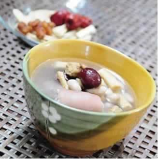
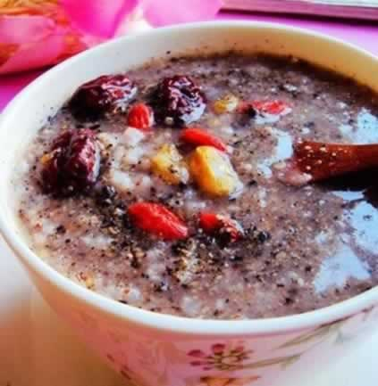

准妈妈吃坚果，宝宝更聪明
坚果一直被大家认为是脂肪类食物，高热量、高脂肪就是它们的特征，但是坚果含有的油脂却多以不饱和脂肪酸为主。对胎儿大脑的发育来说，需要的第一营养成分就是脂类（尤其为不饱和脂肪酸）。所以建议准妈妈们在孕期可适量食用坚果，每天食用坚果不宜超过50克，过量食用坚果容易引起消化不良。那么，准妈妈可以选择食用哪些坚果类食品呢？
1、核桃：核桃的第一大功效是补脑健脑，另外其含有的磷脂具有增长细胞活力的作用，能增强机体抵抗力，还有镇咳平喘的作用。核桃可以生吃，也可以和薏仁、栗子等一起煮粥吃。
2、花生：花生的蛋白质含量高达30%，其营养价值可与鸡蛋、牛奶、瘦肉等媲美，而且易被人体吸收。花生可以与黄豆一起炖汤，也可以和莲子一起放在粥里或是米饭里。
3、杏仁：杏仁有降气、止咳、平喘、润肠通便的功效，对于预防孕期便秘很有好处。但中医认为杏仁有小毒，不宜多食。
4、瓜籽：我们经常可以看到的是葵花籽、南瓜籽和西瓜子。多吃南瓜籽可以防治肾结石病，西瓜籽中医认为性味甘寒, 具有利肺、润肠、止血、健胃等功效。葵花籽所含的不饱和脂肪酸能起到降低胆固醇的作用。
5、松籽：含有丰富的维生素A和E，以及人体必须的脂肪酸、油酸、亚油酸和亚麻酸。生吃或做成美味的松仁玉米都很适合准妈妈。
6、榛子：含有不饱和脂肪酸，并富含磷、铁、钾等矿物质，以及维生素A、B1、B2，经常吃可以明目、健脑。如果不想单吃榛子，可以压碎拌在麦片里一起吃。
有些准妈妈不喜欢吃坚果类食物，那也没关系，你可以稍微对坚果们进行一下加工，以适合自己的口味，不喜欢生食可以炒熟后食用，也可以把坚果研成末，加入盐或和焙过的花椒粉混合在面食里同吃，或放入粥里一起吃，还可以拌在凉菜里或做成各式各样的菜肴。
本周推荐尝试食谱1：
花生猪尾汤
推荐理由：此汤健脾和胃，并补血，花生能够促进胎儿脑发育。
食谱原料：
猪尾3根，花生150克，丁香少许，米酒1小匙，盐少许。
制作方法：
1、猪尾毛剔干净剁成小段，以滚水汆烫洗净。
2、炖锅倒入水1200毫升，加花生煮1小时。
3、锅热加少许油，放入猪尾炒至皮稍焦黄。
4、花生汤加入炒好的猪尾，丁香炖1小时，加米酒和盐调味即成。
本周推荐尝试食谱2：
核桃芝麻花生粥
推荐理由：本粥美味而营养丰富，核桃与花生等均可促进胎宝宝大脑发育，还可为分娩和哺乳做准备。
食谱原料：
核桃仁150克，芝麻50克，花生100克，米200克和蜂蜜适量。
制作方法：
1、将核桃仁、芝麻和花生混合碾成小粒备用。
2、将米淘洗干净，放入锅中，加适量水用小火煮至粥八成熟。
3、将碾好的核桃仁、芝麻和花生，一起放入锅中熬煮至熟烂，最后加入蜂蜜即可食用。